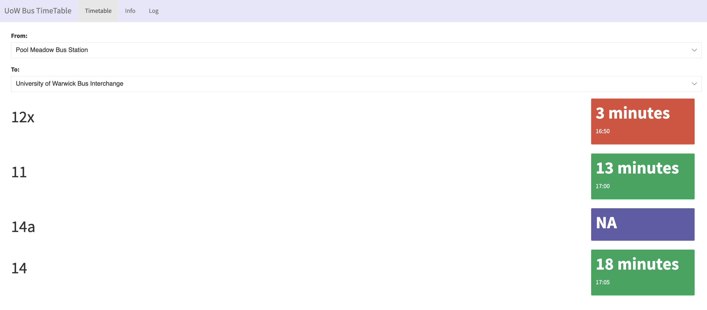

Building a bus timetable app with Shiny
Introduction
In this post, I present a bus timetable app (link) for students at the University of Warwick made with Shiny. This Shiny app is for illustration purpose only.
I extract daily timetable data (which are downloadable) from NX Bus Coventry.
Note that this bus timetable app does not produce real-time information; it basically illustrate all timeslots in a timetable provided.
This bus timetable app only shows timeslots for buses under NX Bus Coventry. It is possible to shows buses from Stagecoach in future updates (if relevant timetable are downloadable publicly).
Features
This bus timetable app has two inputs:
- From: the starting point
- To: the destination
The default option for each of these two inputs are ‘Pool Meadow Bus Station’ and ‘University of Warwick Bus Interchange’ respectively.
User can select different starting point (e.g., Coventry Rail Station) with the same destination (‘University of Warwick Bus Interchange’), or different destinations with the same starting point (‘University of Warwick Bus Interchange’).
Under these two inputs there are four rows; each row represent a bus and its arrival time, indicated with a color box.
If a bus is available, its corresponding color box shows two lines. The first lines shows how many minutes left before it starts from the starting point, while the second line shows its time. User can click into the color box to see the last and upcoming bus arrival times (in terms of time and minutes).
There are four possible colors in a color box:
red: less than 5 minutes
yellow: between 5 and 10 minutes
green: more than 10 minutes
purple: No information available (shown as NA; ‘Not Applicable’)
Background
This project is one of the projects I started paying more attention to recently.
It started off during a bus strike in Coventry in March 2023. At that time I was very confused about bus arrivals as Apple Maps, Google Maps and the one inside MyWarwick app did not show real-time information whenever buses worked.
I then went on official sites and found some useful information. Yet, it is not mobile-browser-friendly as table of the timetable did not adjust to a mobile browser size. Also, it could be frustrating to scroll through the table, when what I really wanted to know from it is when the upcoming bus arrival would be!
I had an idea of building a bus timetable app with Shiny during Christmas last year. I could not pay a lot of attention due to major issues in my professional and personal lives.
Recently I picked up from where I left of eight months ago, and started working it extensively. I encountered a number of challenges both in front-end (such as the layout and design) and back-end (how to match with the current time) etc. As for the front-end, I took the traffic light approach - it’s straightforward, and commonly known among us - red is ‘danger’, yellow is ‘mild’ and green is ‘alright’. As for the back-end, it is, in fact, fascinating to learn how to deploy a shiny app that automatically refreshes after a certain time, how to update one input conditionally on another input etc.
Despite all the challenges I encountered while coding it, I am truly grateful it works the way I envisioned a year ago!
Most importantly, I hope it ultimately benefits UoW students who commute daily by buses. After staying here for more than six years, I truly understand the frustration when asking ‘when the bus will be here soon?!’.
It reminds me of one time I was waiting for 12x (an express bus between university and city centre) with a group of my friends at night in January (very cold!). One of my friends asked if we should wait for 12x though there was 11 (a bus with way more stops than 12x).
We started to view it as a decision-making problem - ‘a bet’ between a certain option with 11 (albeit taking more time) or an uncertain option with 12x (who knows when exactly it would arrive at night?).
I do not remember which option we chose anyway. At that time, of course, it would be way better if we did have an app that shows bus arrival!
MyWarwick app has a feature of showing bus arrivals time, but it seems to restrict on showing arrivals in some stops. Other alternatives such as Apple Maps and Google Maps work well. Recently I noticed that we can use CityMapper for checking bus arrival - an app I would recommend using as it works in other big cities in UK such as London (can’t live without it as it shows how much a trip would cost for alternatives), Birmingham and Manchester.
In the end, I am glad that I’ve made this app the way I envisioned! This bus timetable app is similar to a group of people back home creating a mobile app that shows real-time bus arrival. Honestly, theirs is way more advanced than mine!
